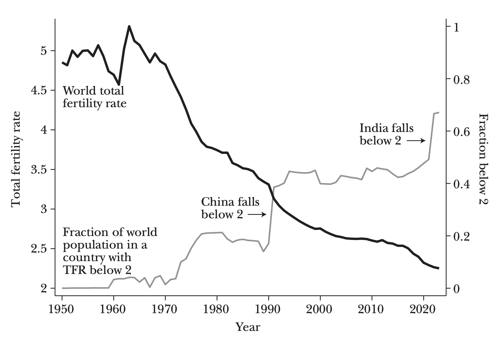
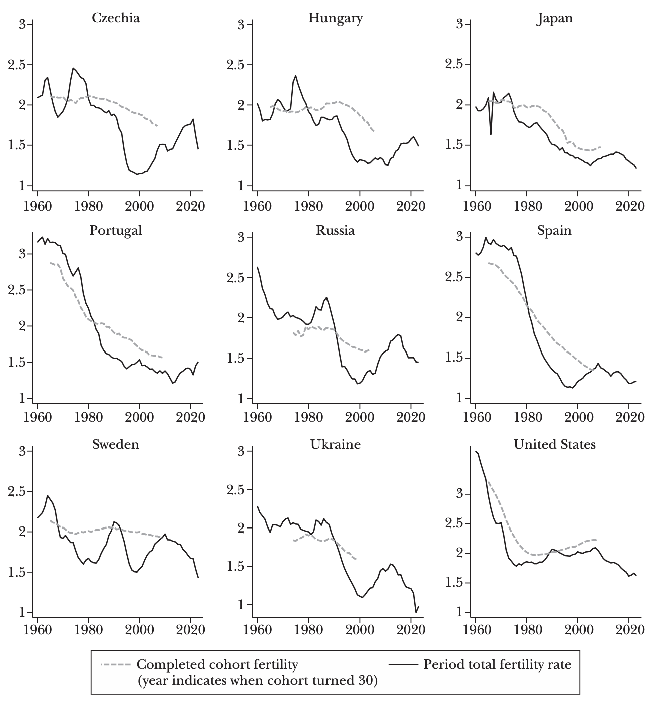
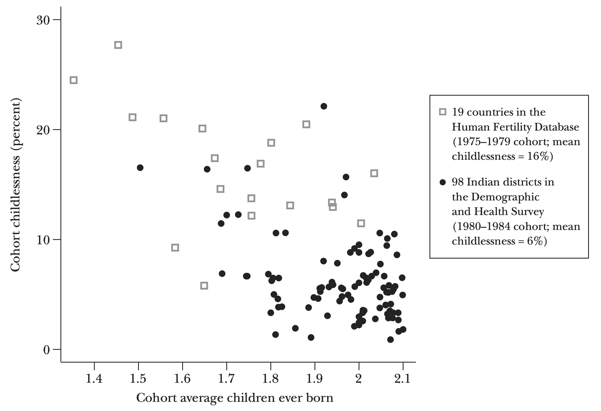
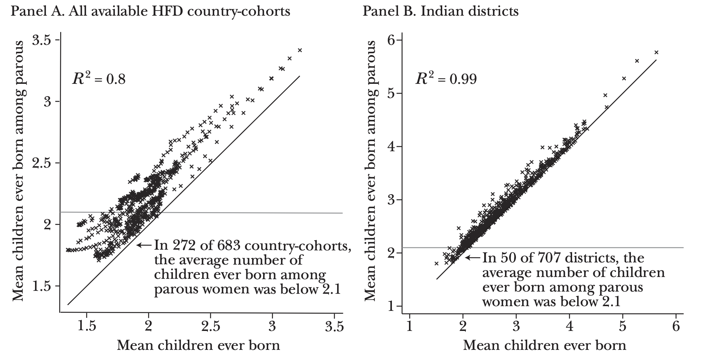

The Total Fertility Rate: Births in a Period
To shed light on the future of birth rates, we begin by reviewing the evidence on global birth rates over the past 75 years. The United Nations Population Division (United Nations 2024) has compiled country-level estimates of total fertility rates back to 1950. Drawing on these data, Figure 2 plots the total fertility rate as a global average since 1950. The total fertility rate is a measure that aggregates information on age-specific fertility rates in a given year—for example, the rate of births to women 20–24 years old in 2023, to women 25–29 years old in 2023, to women 30–34 years old in 2023, and so on—into a summary measure that describes fertility at that point in time. This construction yields the answer to the question of how many children a representative woman would have over a lifetime if she experienced exactly the average age-specific birth rates of some snapshot in time.

Source: Data are from the UN World Population Prospects 2024 (United Nations 2024).
Note: Figure displays, for 1950 to 2023, the worldwide period total fertility rate (left axis) and the fraction of the world population residing in a country with a fertility rate below 2 (right axis). We follow the UN World Population Prospects convention of including UN member states as well as territories, regions, and other designations, such as Taiwan.
The total fertility rate, as a summary statistic describing a time period, is analogous to life expectancy, which aggregates the information contained in a set of time-period-specific and age-specific mortality rates. Just as life expectancy is not a forecast of the expected longevity of someone born today, the total fertility rate is not a forecast of the expected childbearing of someone born today (or entering adulthood today, or having a first child today). Instead, it offers a readily-calculable summary of age-specific fertility rates during some period—typically a calendar year.
Figure 2 shows that the global average of the total fertility rate has been falling for most of the past 75 years: from 4.85 in 1950 to 2.25 in 2023 (the most recent estimate). Although there is important geographic heterogeneity, all regions of the world have experienced fertility declines over this long window: Europe fell from 2.7 to 1.4, North America from 3.1 to 1.6, and South America from 5.6 to 1.7. The two most populous countries also declined dramatically. China's TFR declined from 5.8 to 1.0. India—once the center of fear-mongering about overpopulation (for example, Ehrlich 1968)—fell from 5.7 to a little below 2.0. Sub-Saharan Africa, where fertility today remains highest among any region in the world, has fallen to 4.3 in the most recent estimate, after remaining high and largely stable (in a range from 6.3 to 6.8) from 1950 to 1990.
The apparent trend break in 1970, where the total fertility rate begins falling in Figure 2, is in fact a resumption of a much longer-term decline. Estimates of a global average fertility rate extend back decades, not centuries. But for individual countries with longer histories of reliable data, fertility by 1950 was far below its 1850 levels (for examples from Europe, see Doepke et al. 2023). Coale (1986, Figure 1.4) reports that the total fertility rate in France fell from about four in 1800 to below three by 1910 and in Sweden from above four in 1800 to near two in 1930. Temporary bumps like the mid-twentieth-century Baby Boom—the peak and end of which is captured in Figure 2—have been fluctuations around this long-term trend. Indeed, even during the year when the world's population growth rate was at its highest, 1968, global fertility was falling.
Fertility rates have fallen below two in many countries. A second trace in Figure 2 shows that in 1950, almost nobody lived in a country with a fertility rate below two. In 1975, about 15 percent of people did. By 2000, 40 percent of people did. And in the most recent estimates (for 2023), 67 percent of people in the world lived in a country with a fertility rate below two. Each of the three most populous countries—India, China, and the United States—is now below this threshold.
The threshold of two is important because it means that fertility is below the "replacement level." Below-replacement fertility at a national level does not necessarily imply a shrinking national population: National populations can grow, despite below-replacement fertility, due to migration. Even absent positive net migration, population sizes can continue increasing for a short period after birth rates fall below the two-for-two replacement rate because of improvements in mortality or because of the echoes of large cohorts from past decades. But over the long-term, populations with below-replacement fertility would shrink absent net in-migration.
Replacement-level fertility is not exactly 2.0. Instead, it is a variable that depends on context-specific facts about mortality and must account for the slightly unequal proportion of males and females born (Espenshade, Guzman, and Westoff 2003; Gietel-Basten and Scherbov 2019). Despite this complexity, it is common to read that replacement-level fertility is 2.1.3 Here, we sometimes simplify the discussion by discussing "two" as a focal threshold. Although the exact replacement rate varies by context, if fertility rates are below 2.0, then they are below the replacement rate specific to any time and place.
Completed Cohort Fertility: Births to a Cohort
The total fertility rate is a useful summary statistic, but it does not perfectly capture whether a population will grow or shrink over the long term. That is because TFR is a period rate—it depends only on what happens in a given year. Long-term population change depends on how many children parents have over their lifetimes. Period fertility can change without lifetime fertility changing if the ages of childbearing shift.
The ages of childbearing have indeed been changing. Since the mid-twentieth century, the average age at motherhood has been increasing in many places (Lesthaeghe 1995). In the United States, the mean age of childbearing rose from 24.6 in 1970 to 27.5 in 2023 (Mathews and Hamilton 2002; Brown et al. 2025). Birth rates at earlier ages have been declining, and birth rates at later ages have been increasing, especially births to women above 35 in low-fertility countries (Sobotka and Beaujouan 2017). Such changes can complicate the interpretation of period fertility rates, like those shown in Figure 2. As a simplified illustration, consider a shift from a scenario in which a mother in an earlier cohort had a first child at 25 and a second child at 27 to a scenario in which a mother from a later cohort had a first child at 34 and a second child at 38. An effect of this relative delay and longer birth spacing among later cohorts would be that period total fertility rates would first decline and then increase, yet such a shift would have no impact on the number of children born to each family.
Period total fertility rates are sensitive to such "tempo" shifts—meaning shifts in the age-patterns of childbearing—because these measures combine age-specific fertility rates of different birth cohorts at a point in time. For example, the TFR in France in 1990 would combine information on age-35 fertility among women born in 1955 with information on age-36 fertility among women born in 1954, and so on. Completed cohort fertility (CCF), in contrast, captures lifetime births to the cohort of women born in some place and time—for example, the average number of children born to women who themselves were born in France in 1950. Therefore, to get a fuller picture of the long term trends in declining fertility, it is useful to examine CCF as well.4
The data requirements necessary to calculate completed cohort fertility are more exacting, typically requiring either a representative sample of retrospective birth histories collected after childbearing is completed or detailed information on age-specific fertility rates covering all of the years in which the cohort was aged 15–49. For some countries, this information is available: The Human Fertility Database aggregates historical information on cohort fertility rates for a set of relatively rich countries for which high-quality vital statistics data have been consistently collected (Human Fertility Database 2023).
In Figure 3, we compare period total fertility rates from the UN World Population Prospects with completed cohort fertility data from the Human Fertility Database for a select group of countries. Each panel is a country. To compare period and cohort rates on a common timescale, cohort data are plotted in the figure according to the year in which that cohort turned 30. We plot the maximal extent of available country-specific data on cohort rates from the Human Fertility Database, alongside the total fertility rate data from 1960 to 2023. Figure 3 shows that CCF has followed a downward trend that is similar, though not identical, to period TFR. For the countries and time periods available, CCF has tended to lag TFR and to be less steeply sloped. The time span over which there is overlapping support for the two measures was a period during which TFR was falling and average ages at birth were rising. In all cases, CCF has fallen, though the United States presents a contrast to the global pattern over these years, a point we return to below. Both TFR and CCF in the United States were fairly stable, and even rose slightly, for three decades spanning 1980 to 2010.

Source: TFR data are from the UN World Population Prospects 2024 (United Nations 2024). Completed cohort fertility data are from the Human Fertility Database (Human Fertility Database 2023).
Note: Figure displays period total fertility rates (TFRs) and completed cohort fertility (CCF) for a select group of countries where sufficient CCF data were available. Cohorts are plotted at their date of birth plus 30 years. For example, the CCF for the 1970 birth cohort is plotted at 2000. We plot the full range of available cohort years from the HFD, which differ by country.
Completed cohort fertility tends to evolve more smoothly than period fertility rates, so the two measures can diverge significantly over the short run of a decade or two—as the panels of Czechia, Sweden, and Russia show. This contrast between CCF and TFR reveals something critical in assessing policies that may impact fertility: If a policy change causes some mothers to choose childbearing earlier than they otherwise would have, but does not affect the total children ever born to those women, then it will influence TFR and yet have no impact on the outcomes that matter for long-run population trends—and no influence on CCF. We return to this point later in our discussion of how policies have been shown to affect fertility.
Child-less or Child-fewer?
Recent popular and research attention has focused on the role of childlessness in accounting for patterns of low fertility in the United States and around the world (for example, Stone 2020; Kearney, Levine, and Pardue 2022; Doepke et al. 2023; Wolfe 2024; Lewis-Kraus 2025; Ermisch 2025). Both the total fertility rate and completed cohort fertility are averages, and so they are not informative on the question of whether falling birth rates have been driven primarily by changes in the probability of ever giving birth. They do not distinguish, for example, between a scenario in which two women in the age range 30 to 34 each had one child and a scenario in which one of these women had two children over these ages and the other had none.
Characterizing childlessness matters because long-term depopulation may be especially plausible if both high rates of childlessness and low birth rates among parents are each contributing factors. In this section, we decompose changes in cohort fertility into two components: an increase in childlessness (lifetime nulliparity) versus fewer children being born among women who do have children (completed cohort fertility among the parous subcohort).5
We focus, necessarily, on the countries and cohorts for which high-quality parity data are available. We use two datasets. The first is all of the country-cohorts with available childlessness data in the Human Fertility Database. This includes 683 cohorts of women from 25 countries in eastern and western Europe, North America, and Asia.6
To examine this question in the context of low- and middle-income populations, we also draw on a second sample: birth histories in India's most recent Demographic and Health Survey (2019–2021), known as the NFHS-5 in India, which collects data on children ever born from interviews of women aged 15 to 49 (IIPS and ICF 2021). The survey is representative of what has become the largest national population on Earth, about 1.4 billion people. India's emerging status as a below-replacement population has attracted recent notice: for useful starting points, see Gietel-Basten and Scherbov (2019), Gietel-Basten, Spears, and Visaria (2022), Visaria (2022), and Park et al. (2023), as well as the extended discussion in Spears and Geruso (2025). However, it remains uncommon to include India in comparative studies of low fertility. We examine geographic heterogeneity in fertility across Indian districts, which are administrative subdivisions of states. The average Indian district population size in 2021 was about two million people, which would be comparable to the country population of Slovenia or the size of a small US state, such as Idaho or Nebraska.
Our analysis of data from India focuses on a single pooled cohort (born 1980–1984) and draws insights by comparing higher- and lower-fertility districts within India. We compute cohort fertility among the parous (that is, those who have given birth) as a simple sample mean, conditional on ever having given birth at time of survey. These women would have been observed at ages 35 to 41. This restriction balances a desire to focus attention on the most recent cohorts against the limitation that some survey respondents will not have completed their lifetime childbearing at the time of survey.7 The Human Fertility Database, in contrast, measures completed cohort fertility and includes both cross-sectional variation and variation over time, with dozens of birth cohorts per country.
We begin by showing geographic heterogeneity in childlessness and cohort fertility. In Figure 4, each data point is an Indian district or the most recent country cohort from an advanced economy in the Human Fertility Database.8 Restricting attention to geographies with cohort fertility below 2.1, the figure shows that lower fertility is associated with a greater cohort share that is childless. But the figure also shows that there is significant variation in childlessness for a given level of cohort fertility. In other words, two places with the same cohort fertility might show very different fractions childless. In some low-fertility cohorts, childlessness is common—in excess of 25 percent. In others, childlessness is below 5 percent. There is a clear, visible difference in the figure between low-fertility populations in India and low-fertility cohorts in advanced economies elsewhere. Even at the same overall cohort birth rate, childlessness is less common in India than in the advanced economies in the plot (although in some Indian districts, cohort childlessness exceeds 15 percent).9

Source: Human Fertility Database (2023) and IIPS and ICF (2021).
Note: The sample includes Human Fertility Database (HFD) countries for which there is cohort childlessness data and Indian districts. Cohort childlessness for Indian DHS survey respondents is defined as reporting no children at the time of survey. Both subsamples are restricted to cohorts with cohort fertility below 2.1.
A complementary approach to understanding the role of childlessness in overall completed fertility is to focus on the average lifetime fertility among parous women (again, the nonchildless). Figure 5 compares this statistic, which excludes nulliparous women, against simple cohort fertility, which includes nulliparous women. In panel A, each data point is a cohort from an advanced economy.10 In panel B, each data point is the cohort outcome from an Indian district. If there were no childlessness, all points would lie on a 45-degree line. In the other extreme, if all variation in completed cohort fertility arose from difference in childlessness, points would lie along the same horizontal line.
As Figure 5 shows, average cohort fertility among parous women is highly correlated with unrestricted completed cohort fertility for both country-cohorts and Indian districts. Most of the variation across the country cohorts in panel A—which in this figure includes cross-country comparisons and comparisons within countries over time—is explained by fertility among the parous (R2 = 0.80), which means that it is not explained by childlessness. Childlessness explains even less in India: In panel B, the variation in childlessness explains almost none of the variation in cohort fertility across 707 Indian districts in the 1980–1984 cohort. There, fertility among the parous explains essentially all of the variation (R2 = 0.99). In panel A, despite data points further from the 45-degree line, indicating a larger role of childlessness in determining overall birth rates, there are many country-cohorts for which the average number of children ever born among parous women was below 2.1: 272 of 683 country-cohorts fell below this threshold. In these places, cohort fertility would be below replacement even in a counterfactual thought experiment in which nulliparous women instead had birth rates that exactly matched their parous cohort peers. Even excluding childless cohort members, all of the available birth cohorts in Russia and Spain, and many in Japan, Portugal, and Taiwan, have below-replacement fertility.

Source: Data in panel A are from the Human Fertility Database (HFD); data in panel B are from India's 2019–2021 Demographic and Health Survey.
Note: For a list of countries included in panel A, see text discussion. In panel B each observation is an Indian district, which is an administrative subdivision of a state. Data points exactly on the diagonal 45° lines would reflect zero childlessness.
To more precisely quantify the role of childlessness in accounting for below-replacement fertility, we conduct a decomposition in the spirit of Kitagawa's (1955) exact decomposition of a weighted average of subgroup means into the component due to weights and the component due to within-subgroup means. In our application, the two subgroups are the parous and nulliparous. The within-subgroup means are average cohort fertility among the parous and average cohort fertility among the nulliparous (which is zero by definition). The aim of the decomposition is to compare two cohorts, such as an earlier and later cohort of the same country, and evaluate the relative importance of increasing childlessness versus a change in the fertility rate among the parous in accounting for overall cohort fertility decline across the cohorts.
Table 1 reports the results, using data from the advanced economies in the Human Fertility Database. As the top panel shows, the average early cohort is born in 1956, while the average later cohort is born in 1976—that is, just old enough for members to have completed, or nearly completed, their childbearing years by 2025. The bottom panel shows the results of the decomposition. The average decline in fertility among these recent cohorts relative to the cohorts preceding them by 20 years was 0.25 births. Of this decline, 0.09 births, or 37 percent of the gap, is statistically accounted for by increased childlessness in the later cohort. The remaining 0.16 births, or 63 percent of the gap, is accounted for by declines in fertility among the parous.
| Most recent cohort | Cohort 20 years before | |
|---|---|---|
| Panel A. Sample means | ||
| Country-cohorts in sample | 19 | 19 |
| Average cohort year | 1976.1 | 1956.1 |
| Average completed fertility | 1.77 | 2.01 |
| Average completed fertility among parous | 2.06 | 2.23 |
| Average childlessness | 0.14 | 0.10 |
| Panel B. Kitagawa-like decomposition | ||
| Total difference in completed cohort fertility: | 0.25 births | |
| Difference in fertility among parous: | 0.18 births | |
| Difference in childlessness: | 4.4 percentage points | |
| Difference due to childlessness: | 0.09 births, or 37% of gap | |
| Difference due to fertility among parous: | 0.16 births, or 63% of gap | |
Note:Decomposition compares cohorts separated by 20 years in 19 countries in the Human Fertility Database. Each observation is a country-cohort in the HFD, unweighted. The sample is smaller than in Figure 5 because a country must have two cohort-observations 20 years apart to be included. Some fractions may not add to one due to rounding. Full calculations are available in Geruso and Spears (2025b), which also lists the countries and cohorts included.
A similar analysis can be used to decompose differences across districts in India, where the difference to be decomposed is across districts for women born in the same set of years, with two groups of districts defined by having the lowest and highest cohort fertility rates. Unsurprisingly, given panel B of Figure 5, almost all of this difference—94 percent—is accounted for by the difference in fertility among the parous. Differing patterns of childlessness account for only 6 percent of the gap between high-fertility and low-fertility districts.
These results complement a prior literature decomposing changes in cohort fertility with attention to parity within countries of Pacific Asia, Europe, and the United States (Zeman et al. 2018; Gietel-Basten 2019; Beaujouan, Zeman, and Nathan 2023). Other papers study childlessness or decompose fertility changes by parity with a smaller geographic focus on one or a few countries. These include Ermisch (2025), which finds that changes in childlessness were important to changes in English cohort fertility earlier in the twentieth century; Hellstrand et al. (2021) and Hellstrand, Nisén, and Myrskylä (2022), which study Nordic Europe; Hwang (2023), a study of South Korea; Sobotka (2021) on East Asia; and Aaronson, Lange, and Mazumder (2014) on Black women in the US South.
Our finding that changes in childlessness are an important—but not the primary—driver of falling fertility in many country contexts provides an informative contrast with recent US-centered narratives that attribute below-replacement birth rates primarily to increasing childlessness (as one example, Stone 2020). Childlessness is indeed more important to recent changes in cohort fertility in the United States than in the other advanced economies we examine here. The United States is somewhat of an outlier in cohort fertility trends, as shown above in Figure 3. Further, Kearney and Levine (2025) show that the most recent cohorts of US women are meaningfully more likely to be childless at 25 and 30 than earlier cohorts.
Overall, both increasing childlessness and smaller families among the parous are important—even though the contribution of each factor differs across England, India, the United States, and elsewhere. Fertility among parents in many countries is already low enough to lead to depopulation, even without childlessness. In short, sub-replacement fertility results from two strengthening trends: both greater childlessness and smaller family sizes among people who are parents.